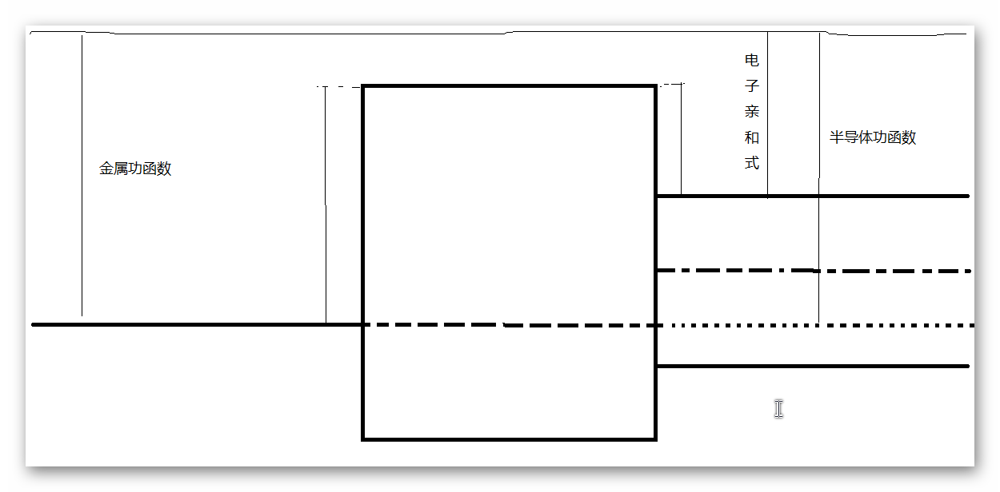

| 半导体器件 | |
目录： 第一节--半导体基础 第二节--二极管 第三节--晶体管 第四节--MOS电容 第五节--MOS管 第六节--纳米器件 第七节--结型场效应管 返回页： 总结页 |
MOS电容！说明，出于计算的连续性的考虑，所有的计算都转移到补充页面以供参考。在主界面只是负责解决半导体概念的问题，不做任何具体的推导，以免妨碍实际的理论模型的构建。 1、理想MOS电容（1）定义：由金属栅极，氧化层（电隔离）半导体（表面态）构成的三层结构。 能带表示：  （2）半导体表面状态 积累态：载流子积累，对于P型，能带上弯。 平带状态：载流子不变，对于P型，能带水平。 耗尽层：载流子减少，对于P型，能带下弯。 反型态：载流子反型，对于P型，能带下弯至本征费米能级以下。 强反型：载流子强反型，对于P型，能带下弯至费米能级与本征费米能级差与原P型相同。 （3）理想阈值电压及强反型以后的最大耗尽区宽度 阈值电压：强反型时的栅压，即能带反转至与本征能级对称的位置时的栅压。 最大空间电荷区宽度：强反型后的费米式不再变化，外加电压转移至 反型层中少子的迁移，内部没有影响。所以此时的空间电荷区不再变化。 （4）半导体表面电荷及表面势 半导体表面势，就是加在半导体表面的势能。表面电荷就是在氧化层和半导体界面处的电荷。表面电荷可以由氧化层的电压与电容关系求出，表面式则是依靠泊松方程解出来的。 2、实际MOS电容的平带电压及阈值电压（1）功函数差：金属和半导体的费米能级具有差值，一般是金属低于半导体。 （2）阈值电压：在标准的阈值电压的基础上加上平带电压。一般来说，平带电压为正才能抵消能带差。 （3）氧化层电荷：氧化层中的电荷破坏了氧化层的电容特性，会降低氧化层的电压控制，提高所需的平带电压。 3、MOS结构的电容-电压特性电容：有氧化层电容和半导体表面电容组成。一般使用归一化电容描述（除以氧化层电容） 电压影响：电压对半导体表面电容有较大的影响，主要体现在表面费米势在标准费米势与强反型费米势之间。对于高频信号，强反型时无法回到正常状态，表面电容不够大。 4、实际MOS的C-V曲线功函数和氧化层电荷：使电压作用时需要先减去平带电压和氧化层补偿，导致C-V右移。 温度的影响：在室温下测得标准曲线，120下曲线1，反向电压的到曲线2，最后可以得到可动离子电荷的总量。 界面电荷的影响：界面电荷，就是在半导体表面具有表面能级的电荷。表面能级的存在使得其上的为受主型，其下为施主型。界面态在大于标准点时带负电荷，右移；在小于标准点时带正电荷，左移。 |